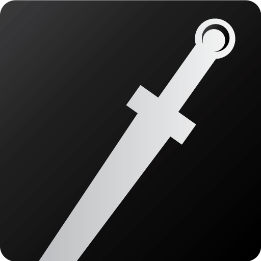

See which Greek God best represents you from your birth date!
Enter your birthday:
Aries
Athena
Goddess of Wisdom
You are Athena! The Goddess of Wisdom. Aries in particular are associated with the fire of the mind, raw creativity and thought amongst traits like leadership,
strategy and courage, all traits intrinsic to Athena in her myths.
Taurus
Aphrodite
Goddess of Love
You are Aphrodite! The Goddess of Love. Both Aphrodite and the Taurus sign are closely tied to the earthly attribute of harmony, being associated with nurture,
faith, loyalty, friendship, love and sensuality.
Gemini
Apollo
God of the Sun
You are Apollo! Apollo is both a god highly loved and highly feared, the light bearer who is just as likely to help you as well as
utterly destroy you, and even do both, given his role as the purifier. Gemini thus bears a similar role to the Day rune:
it is a symbol of the inherent duality present in light.
Cancer
Hermes
Messenger of the Gods | God of Travel
You are Hermes! The sign of Cancer can be more or less described as the most protective of all signs. It is defined by strong emotions,
particularly empathy, love, and a healthy passion for defense, both of the self and others. Hermes, suffice to say, is among the Olympians one of the closest to mankind, being the
friend, protector, guardian and guide.
Leo
Zeus
King of the Gods | God of the Sky
You are Zeus! As the King of the gods, Zeus‘ connection with Leo is appropriate as it is the “king of the Zodiac signs”.
Virgo
Demeter
Goddess of Nature
Tou are Demeter! Virgo's are frequently associated with practicality, critical analysis,
skepticism, structure and perfectionism, traits not associated with Demeter. However, Demeter embodies the Virgo trait of duty,
often at the expense of others but nonetheless well intentioned.
Libra
Hephaestus
God of Fire
You are Hephaestus! God of Fire.As previously discussed, Hephaestus‘
correspondence with Libra is derived from his role as the smith god. As just, Hephaestus is a god of innovation,
taming the chaos of the flames to produce items to impose civilization, much like the drive behind a Libra.
Scorpio

Ares
God of War
You are Ares! Scorpio is the second Mars sign, and the one that most relates to Ares: while the fiery aspects of Aries might relate to
him to some extent, it’s the more emotional Scorpio that resonates closer to him and his primal nature.
Sagittarius
Hades
God of Death
You are Hades! The God of Death. As the first winter sign, Sagittarius bear a stoic personality. Hades is a god of power,
consuming the darkness and destroying those who offend him.
Capricorn
Dionysius
God of Wine
You are Dionysius! The God of Ecstacy and Madness. Dionysius', like Capricorns, stressed order, stability and stoicness. More so,
he took theses traits further and is a god associated with
hard work, and stubbornness.
Aquarius
Hera
Queen of the Gods
You are Hera! The Queen Mother of the Gods. Hera is described as taking the sign of Aquarius due to her opposition to her husband.
Leo is the leader, the king, while Aquarius is associated with intellectual drives and understanding. Both are necessary for stability and peace to
prosper via righteousness and understanding.Both are also associated with personal pride, with Leo being the more emotional narcissism while Aquarius is a more
detached vanity.
Pisces
Poseidon
God of the Sea
You are Poseidon! Pisces is also associated with dreams and the subconscious, which relate to Poseidon’s primal, impulsive nature.
Pisces correlates with selflessness and charity, representing Poseidon’s less wrathful and
more fertile aspects.
No Match!
Try entering a valid date!
Directions:
Enter your birth date into the boxes, then hit submit! Your Olympian God based on your Zodiac Sign will be displayed.
Click the grey around that box to close it. Feel free to click any other
pictures below to see all the Signs and their Gods.